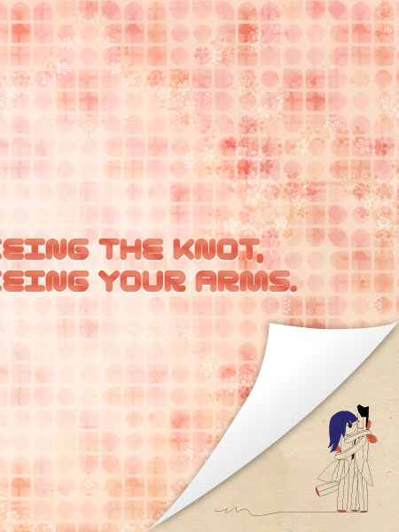
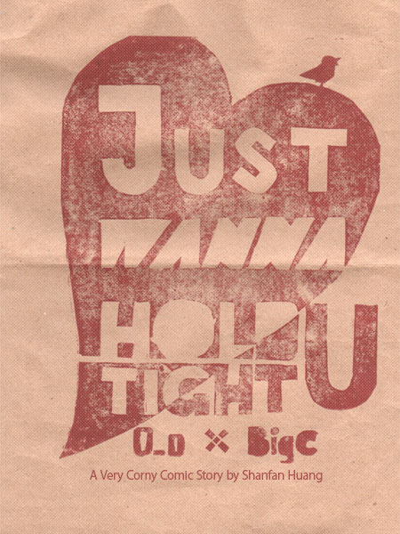
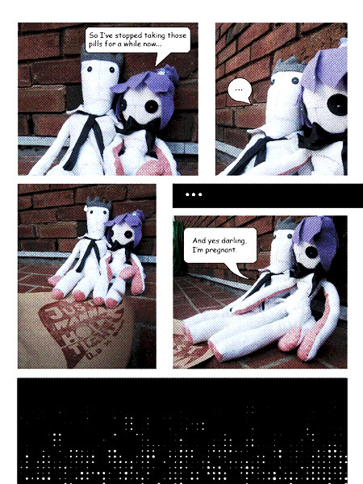
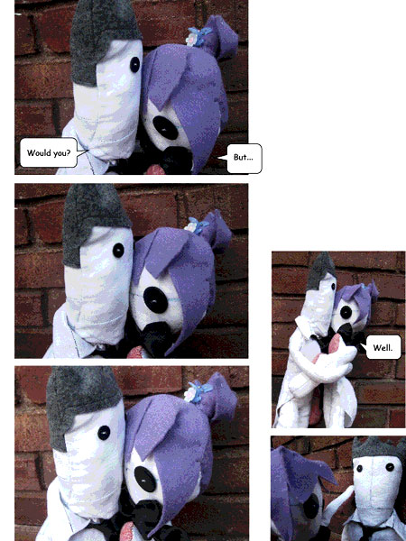
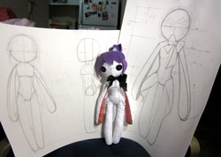

Design. Create. Play.
(cc)2011 Shanfan Huang

Disclaimer: This webpage is not tested in IE.





Prev | Next
Tieing The Knot, Tieing Your Arms
Just Wanna Hold You Tight
This is a pair of bridal dolls I designed for a friend's wedding. The original idea was to make their arm really long, so that they could tie together, like, tieing the knot, as they were supposed to.
Due to the time constraints, they weren't properly photographed before they were sent to my friend. As a prototype, I'm quite satisfied about the result. Later on, I applied the similar construction on the creation of Dora Chow.